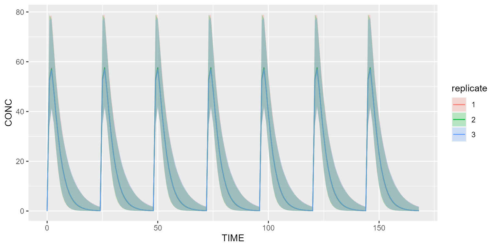

This vignette explains how you can track the simulation progress
thanks to the package progressr.
Track the simulation progress in an R script
Load package progressr as follows:
The easiest way to track the progress is to add the following snippet
once for all in your script. By doing so, any call to the simulate
method of campsis will display the progress bar.
handlers(global=TRUE)By default, the progress bar will only give the progress as a
percentage. Any user-custom handler may be provided. Please have a look
at the official documentation
(Vignette progressr: An Introduction / ‘Customizing how
progress is reported’).
If you want to use the default handler from campsis,
which gives you more details about what’s being simulated and what’s the
remaining time (ETA), you can write:
If you don’t want your handler(s) to be global, you can also
explicitly call the method with_progress. The snippet below
is an example of simulation where this method is called.
dataset <- Dataset(1000) %>%
add(Infusion(time=0, amount=1000, compartment=1, ii=24, addl=6)) %>%
add(Observations(seq(0, 7*24)))
model <- model_suite$pk$`1cpt_fo`
results <- with_progress(simulate(model=model, dataset=dataset, dest="mrgsolve", seed=1, replicates=3))
shadedPlot(results, "CONC", "replicate")
Any handler may be provided as well:
results <- with_progress(simulate(model=model, dataset=dataset, dest="mrgsolve", seed=1, replicates=3), handlers=campsis_handler())Track the simulation progress in a targets project
The targets package is a Make-like pipeline tool for Statistics and data science in R. With targets, you can maintain a reproducible workflow without repeating yourself. It is the ideal pipeline tool to use for medium to large simulation projects with Campsis.
The following script (_targets.R) gives you a brief
overview of what you can achieve with targets and how the progress bar
can be enabled. It is important to mention that
handlers(global=TRUE) can’t be used in such a script. If
you try to do so, an error message will pop up.
library(targets)
source("R/my_script.R")
# Packages loaded by targets
packages <- c("campsis", "progressr")
tar_option_set(packages=packages)
# Enable progress bar
options(progressr.enable=TRUE)
progressr::handlers(campsis::campsis_handler())
list(
tar_target(
model,
model_suite$pk$`1cpt_fo`
),
tar_target(
dataset,
makeDataset(subjects=1000, dose=1000)
),
tar_target(
results,
runSimulation(model=model, dataset=dataset, replicates=3)
)
)The R folder contains as much as possible of the code (or logic)
being executed, in the form of R functions. The snippet below shows the
content of my_script.R. An explicit call to
with_progress will make the progress bar appear when
executing the target results.
makeDataset <- function(subjects, dose) {
dataset <- Dataset(subjects=subjects) %>%
add(Infusion(time=0, amount=dose, compartment=1, ii=24, addl=6)) %>%
add(Observations(seq(0, 7*24)))
return(dataset)
}
runSimulation <- function(model, dataset, replicates) {
results <- with_progress(simulate(model=model, dataset=dataset, dest="mrgsolve",
seed=1, replicates=replicates))
return(results)
}This small project can be downloaded by clicking the link below.
Download targets squelettonTo run this project, simply open an R console within your targets folder and type: